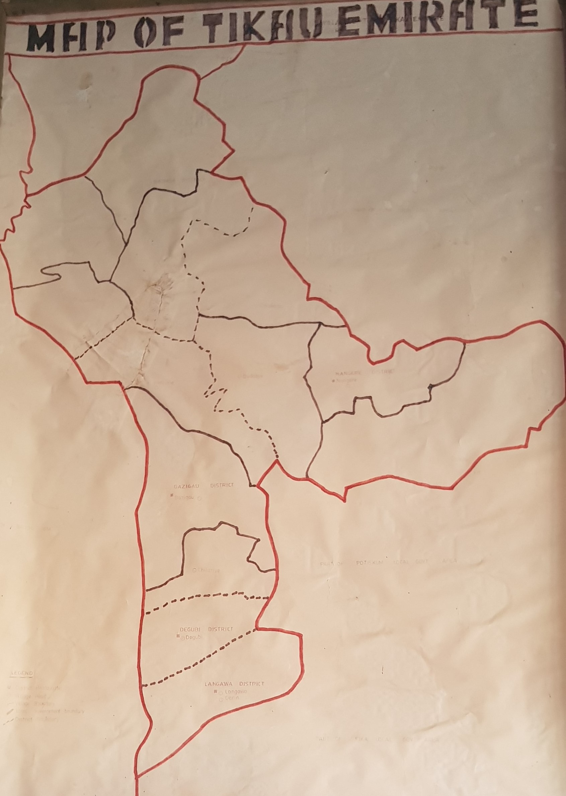

THE CREATION OF THE TIKAU EMIRATE
Tikau Emirate is inhabited mostly by Karai-Karai people.
Archeological and ethno-linguistic sources categorize the Karai-Karai as
part of the Chadic group of languages who left Yemen and came through
Egypt to settle on Mega-Chad shores searching for Agricultural, pastures
and hunting lands. Oral tradition assigns the origin of Karai-Karai to a
different account. It relates that, the Karai-Karai shifted west ward from
Yemen in the Middle East along with the kanuri and other groups. The Kisri
legend especially links this migration to the successive advents of the
great monotheist religions of Judaism, Christianity and Islam. Some
Karai-Karai splinter groups cover the eastern plains of present day Jigawa
(Gwaram) and Bauchi (Shira) States. Others settle in the arable western
plains of yobe state, around the 15th century and founded the various
Karai-Karai clans of Tikau, Langawa, Degubi, Pakarau and Dazigau.
According to a book titled languages of the world", in its entry on the
tribe, Karai-Karai Language is described as Afro-Asiatic, Chadic Language
with with the following dialects;
i. Jalalum (Western Karai-Karai)
ii. Pakaro (Northern Karai-Karai)
iii. Ngwajum (Eastern Karai-Karai)
However, in 1987 publication placed Karai-Karai tribe as the thirty-three
(33rd) largest ethnic group in Nigeria, and the Largest ethnic group in
southern yobe. A man called Shikau founded Tikau dynasty , other
rulers reigned in succession notably,
Ndiirama Jiji and Ndiirama Mataata. Mataata was confronted
and defeated by the first Borno Caliphate in 1958. His successor
Warkati was the first to adopt the Kanuri title Mai .On the
strength of their cultural and economic commonality,
Langawa, Degubi, Pakarau and Dazigua coalesced into virile
Commonwealth under the leadership of
Mai Saaban (1873 – 1923) of Tikau . Saaban’s expansion of
the Tikau frontiers was only halted by the arrival of the british Colonial
forces at the dawn of the 20th century.
During the reign of Saaban’s son, Mai Grema (1924 – 1945) , Tikau
was included in the new Fika Emirate. So too were other chieftaincies
within the defunct Karai-Karai Commonwealth. Tikau continued to remain as
chiefdom, its first Western Educated chief, the son of Mai Grema,
Alhaji Abubakar Shuwa Ibn Grema
was elevated to the status of a District Head in 1962. His appointment as
a district head partially restored shikau’s pre-colonial portion of land
separated from Tikau by the British.
Alhaji Abubakar Shuwa, the 10th ruler of Tikau, succeeded his
father Mai Grema from 1945. He reigned as village head of Tikau up to
1962. when he was appointed District of Nangere. He was elevated to the
status of Emir of Tikau in 1993; however this was short lived as the
emirate was soon dissolved. The Emirate was re-instated in 2001 and the
Mai of Tikau was re-appointed and elevated to the status of second class.
He died on Tuesday , 17th July, 2001, and his son
Alhaji Muhammadu Abubakar Ibn Grema, the 11th ruler of Tikau
succeeded him as
Mai of Tikau on 21st july, 2001 and was turbaned on Saturday 11th may,
2002.
Alhaji Muhammadu Abubakar Ibn Grema was upgraded to first class Emir on
28th may, 2007 by Alhaji Bukar Abba Ibrahim, FNIQS, the then Governor of
Yobe state.
On 5th August 2010, Alhaji Muhammadu Abubakar Ibn Grema was appointed the
first Chancellor of Yobe State University, Damaturu, by Alhaji Ibrahim
Gaidam, FCNA, FCPA, Executive Governor of Yobe State.
People and Culture in Tikau Emirate
As mentioned earlier, the original settlers of Tikau Emirate were Karai-Karai, but there are other tribes that are living with them peacefully, these include: Fulani, Ngizim, Bolewa, Hausa, Yoruba, Igbo, Kanuri, Ngamo among others. Though these tribes are living peacefully among themselves, the tendency of encountering common disputes exist either between different tribes such as Farmers - herdsmen crisis; or within same tribe, such as land disputes, marriage disputes and cases of inheritance. The Emrate council plays a remarkable role in settling such disputes within its threshold. Culturally, the people of Tikau Emirate Council are culturally rich, particularly in areas of dressing, pot molding, weaving, craft among others. The Dazigau Barakau (Dazigau festivals), Chilariye Barakau (Chilariye festivals). Degubi Barakau (Degubi festivals), and state and international festivals which are generally termed as Baaraa Ma-Jalam (Jalam Festivals) were some of the Karai-Karai annual display of traditional activities. Similarly, a Durbur festival is also celebrated as an occasional festival in Tikau Emirate. This festival usually marks an important event, such as Eid el Kabir, Eid el Fitri or a visit by a highly respected personality. it is noteworthy that there are other cultural practices that are attributed to the other minority tribes of the Emirate such as (Sharo/shadi) and (Dambe) for fulani Hausa tribes respectively.
Geographical Survey of Tikau Emirate
Tikau Emirate Council is located at Sabon Garin Nangere, the headquarter
of Nangere Local Government in the western part of Yobe State,
approximately at 11°51'50"N 11°04'11"E. It shares boundaries to the
North with Jakusko and Fune Local Government Areas; to the East with
Potiskum Local Government Area; to the South East with Fika Local
Government Area; and Bauch state to the West.

According to 200 census, Tikau Emirate has a population of 87,823, spread
across the five districts of the Emirate, which covered a total land are
of 980 square kilometers. Generally, the topography of the Emirate can be
described as flat and plain which laid in a semi-arid zone, situated in
Sahel Savannah Belt. The major topographic features in the Emirate are the
swamps that can be seen in many parts of the Emirate and the extension of
RIve Komadugu which is located along the northern border between Nangere
and Jakusko Local Government areas, particularly around Dawas and Gada
axis. The climate of Tikau Emirate is dry and hot for the greater part of
the year, but the hottest months are March and April. The Emirate also
experiences three (3) seasons annually, the dry, rainy and summer. The
rainy season is shorter than the dry season and starts around May with
dusty storms and end in October. The dry season commences from November to
March, so also harmattan starts at the same time, while summer starts
around March and lasts till the beginning of rainfall. Similarly, the are
is endowed with abundant mineral resources such as Potash and Gypsum amon
others. It is also rich with many vegetables and some trees that provide
an execelent grazing pasture for animals. it is worth of note because of
its favorable climate condition, the area attracts a lot of farmers and
herdsmen from many parts of the country.